Sportart wählen. „Letzte Session“ erscheint, sobald eine Auswertung gespeichert ist.

Grünes Dreieck: noch keine Aufnahme. Der grüne Bogen zeigt auf die START-Taste.
Bedienungsanleitung · Garmin Connect IQ · Windsurfen, Wingen und Surfen
Anleitungsrevision V8 · SurfsApp 0.25.7 · Stand: 22.11.2026
Separate Surf-Anleitung: Die Surf-Sportart, ihre vier Seiten und alle Surf-Grenzwerte sind in der SurfsApp Surf-Anleitung ausführlich beschrieben.
SurfsApp zeichnet Windsurf-, Wingfoil- und Surf-Sessions auf und zeigt dabei Geschwindigkeit, Herzfrequenz, Strecke und sportartspezifische Kennzahlen. Die Aufnahme wird als Aktivität in Garmin Connect gespeichert. Beim Windsurfen erkennt die App Gleiten, Halsen, Wenden, Wellenritte, Jumps und Loops. Beim Surfen gibt es vier eigene Seiten für Live-Werte, Wellen, Turns und die Session; die vollständige Beschreibung steht in der separaten Surf-Anleitung.
Was die Uhr erkennt und aufzeichnet, stellen Sie vor der Session im Menü Modus ein (Abschnitt 7 und 9). Für eine ausführliche Auswertung am Computer gibt es die SurfsApp-Web-App.
Die Bilder in dieser Anleitung sind aus der Programmierung der App erzeugt und zeigen eine runde Uhr mit 260 × 260 Bildpunkten (zum Beispiel fēnix 7 Pro). Schriftgrößen und Abstände können je nach Uhr leicht abweichen. Die Zahlenwerte sind Beispiele.
| Bedienelement | Funktion |
|---|---|
| START/STOP | Auswählen, bestätigen, Aufnahme starten. Während der Aufnahme: Aktionsmenü öffnen. |
| HOCH / RUNTER | In Listen auswählen, Werte ändern, während der Aufnahme Seiten blättern. |
| HOCH lang gedrückt | Einstellungen öffnen, auch während der Aufnahme. |
| BACK | Eine Ebene zurück. Auf der Startseite beendet es die App. Während der Aufnahme setzt es einen Marker. |
| Touchscreen | Wird nicht ausgewertet. Wassertropfen lösen nichts aus. |
| Bedienelement | Funktion |
|---|---|
| Obere Taste | Auswählen, bestätigen, Aufnahme starten. Während der Aufnahme: Aktionsmenü öffnen. |
| Untere Taste | Eine Ebene zurück, auf der Startseite App beenden. Während der Aufnahme: Marker setzen. |
| Wischen nach oben / unten | Blättern in Listen und Seiten, auch während der Aufnahme. |
| Wischen nach links / rechts | Seiten blättern, nur während der Aufnahme und in der Pause (links = weiter, rechts = zurück). |
| Tippen | Ohne Funktion. Ausgewählt wird immer mit der oberen Taste. |
| Langer Druck auf den Bildschirm | Ohne Funktion. Die Einstellungen stehen als eigener Eintrag „Einstellungen“ auf der Startseite und im Aktionsmenü. |
Während einer laufenden Aufnahme ist der Bildschirm gesperrt, nur Wischen zum Blättern der Seiten ist möglich. In der Sportwahl, in der Vorschau und in einer von Hand gesetzten Pause ist er frei.
In allen Listen steht der gewählte Eintrag in der Mitte mit blauem Rahmen, die Nachbarn grau darüber und darunter. Blaue Pfeile zeigen bei kurzen Listen, dass es in diese Richtung weitergeht. Jede Liste läuft im Kreis: Nach dem letzten Eintrag folgt wieder der erste.
Mit HOCH und RUNTER wählen Sie Windsurfen, Wingen oder Surfen. Welche Sportarten sichtbar sind, legen Sie unter „Sportarten“ fest. Steht eine gespeicherte Auswertung bereit, erscheint zusätzlich „Letzte Session“. Auf der vívoactive 4 folgt außerdem „Einstellungen“. Mit nur zwei Einträgen stehen darunter die Versionsnummer und gegebenenfalls eine Meldung.
Prüfen Sie vor dem Start die Einstellungen im Menü Modus. Einige davon legen fest, welche Felder die Aktivität bekommt, und gelten deshalb erst ab der nächsten Session (Abschnitt 7).
Reicht der Speicher der Uhr nur für eine kürzere Aufnahme als üblich, erscheint in der Vorschau ein Hinweis mit der möglichen Dauer. Eine Taste schließt ihn.

START/STOP öffnet während der Aufnahme das Aktionsmenü:
Jede Aktion verlangt eine Bestätigung mit „Ja“ oder „Nein“. HOCH und RUNTER wechseln die Auswahl, START bestätigt, BACK führt zurück.
Die Pause wird von Hand oder automatisch ausgelöst (Einstellung „Pause“). Bei „Automatic“ hält die Aufnahme an, wenn die Geschwindigkeit länger als „Pause nach“ unter „Pause unter“ liegt, und läuft weiter, sobald „Fahrt ab“ für einige Sekunden überschritten wird. Auf der Hauptseite steht in der Pause oben „AUTO“ (automatisch) bzw. das Pausezeichen (von Hand); statt des Tempos zeigt sie Vmax.
Warten beim Pausieren noch Sprungdaten (Jump oder Loop auf Visu), schreibt die Uhr sie zuerst in die Aktivität und pausiert danach. Auf der Hauptseite steht solange gelb „PAUSE“ mit der Restzeit in Sekunden. Ein zweites Pausieren bricht das Warten ab. Diese Wartezeit zählt auf der Uhr und in der Web-App als Pause, siehe „Pausenzeiten“ weiter unten.
Ist Marker eingeschaltet, setzt BACK während der Aufnahme einen Marker. Die Uhr bestätigt mit zwei kurzen Vibrationen. Zwei Marker müssen mindestens zwei Sekunden auseinander liegen. In der Pause setzt BACK keinen Marker. Mehr dazu in Abschnitt 9.
Auf jeder Seite der Aufnahme zeigt die Kopfzeile links den GPS-Empfang (grün = gut, rot = noch kein Empfang), rechts den Akku und in der Mitte den Zustand der Aufnahme:
| Anzeige in der Mitte | Bedeutung |
|---|---|
| Grüner Punkt | Die Aufnahme läuft. |
| Grüner Punkt mit blauem Ring und einer Zahl daneben | Die Aufnahme läuft, und so viele Sprung-Datenpakete warten noch darauf, in die Aktivität geschrieben zu werden (nur mit Jump oder Loop auf Visu). Die Zahl sinkt, während die Daten geschrieben werden. |
| Gelbe Zahl mit „s“ | Die Uhr schreibt vor dem Speichern noch Sprungdaten (Restzeit in Sekunden). |
| Blaues Quadrat | Der Speicher der Uhr für diese Aufnahme ist voll. Die Uhr speichert gleich und beginnt einen neuen Teil, siehe unten. |
| Pausezeichen oder „AUTO“ | Die Aufnahme ist angehalten, von Hand oder automatisch. |


Mit Jump oder Loop auf Visu legt die Uhr zu jedem Sprung Messdaten in die Aktivität. Sie schreibt sie nach und nach, deshalb können beim Speichern noch Daten warten. Dann gilt:
Mit „Priorität Loop/Jump“ schreibt die Uhr die Sprungdaten deutlich schneller (Abschnitt 9). Bei leerem Akku speichert die Uhr immer sofort.
Damit Sprungdaten in die Aktivität kommen, muss die Aufnahme laufen. Wartet beim Pausieren, bei der automatischen Pause oder beim Speichern noch etwas, läuft die Aufnahme deshalb kurz weiter. Diese Zeit kennzeichnet die Uhr als Pause: Fahrzeit, Tempo und Ritte auf der Uhr und in der Web-App rechnen sie nicht mit. Garmin Connect zählt sie dagegen als Aktivitätszeit, weil die Aufnahme dort lief.

Die Einstellungen lassen sich auch während der Aufnahme öffnen. Einstellungen, die bestimmen, welche Felder die Aktivität bekommt, liegen ab dem Start fest. Ändern Sie eine davon, zeigt die Uhr beim Verlassen der Einstellungen „Umschaltung bei neuer Session“; die Änderung gilt dann ab der nächsten Aufnahme. Das betrifft Jump, Jump ab, Priorität Loop/Jump, Advanced Loops, Wingen, Wellenritt Aus, die Connect-Felder sowie Marker und Akku-Diagramm.
Loop (Visu, Connect, Aus) und Wellenritt (Visu, Connect) lassen sich in einer Windsurf-Aufnahme, die mit einer Visu-Stellung begonnen wurde, sofort umschalten, soweit die nötigen Felder seit dem Start angelegt sind: Loop auf Visu nur, wenn Loop oder Jump beim Start auf Visu stand, Wellenritt auf Visu nur, wenn Wellenritt beim Start auf Visu stand. Sonst erscheint ebenfalls der Hinweis.
Die Uhr hat für jede Aufnahme nur begrenzt Platz für die Sekundenwerte. Reicht er auf Ihrer Uhr nur für eine kürzere Aufnahme als üblich, erscheint nach dem Start fünf Sekunden lang ein Hinweis mit der möglichen Dauer, zum Beispiel „Speicher für 1:20 h, dann neuer Teil“. START schließt ihn sofort.
Ist der Speicher während der Aufnahme voll, geht es so weiter:
In Garmin Connect erscheinen die Teile als getrennte Aktivitäten. Die Auswertung nach dem Speichern gibt es erst nach dem letzten Teil.
Manchmal beendet die Uhr die App mitten in der Aufnahme, zum Beispiel wenn Sie aus der Aufnahme heraus Nachrichten oder den Kompass der Uhr öffnen. Starten Sie die App innerhalb von zehn Minuten wieder, setzt sie die Aufnahme sofort fort: Es beginnt ein neuer Teil, und fünf Sekunden lang steht auf der Hauptseite „FORTGESETZT“. Auch hier sind die beiden Teile in Garmin Connect zwei Aktivitäten. Liegt das Beenden länger als zehn Minuten zurück, startet die App wie gewohnt auf der Startseite.
Fällt der Akku während der Aufnahme unter 4 %, speichert die Uhr die Aufnahme von selbst, damit nichts verloren geht. Die Uhr vibriert, und es erscheint ein gelbes Warnzeichen mit „Akku leer“ und darunter:
BACK beendet die App. Bei leerem Akku zeigt die Uhr keine Auswertung und beginnt keinen neuen Teil. Laden Sie die Uhr, bevor Sie weiterfahren.
HOCH und RUNTER blättern durch die Seiten, die Punkte am rechten Rand zeigen die Position; eigene Seiten haben einen blauen Punkt. Die Reihenfolge ist:
Eigene Seiten stehen nach der Hauptseite, nach den Maxima oder nach den Wellen, je nach Einstellung (Abschnitt 6).


Jede Liste zeigt drei Einträge je Seite, der neueste steht oben. Es gibt höchstens drei Seiten je Liste, also die letzten neun Einträge; die Überschrift zeigt die Seite, zum Beispiel „Loops 1/2“. Eine Liste erscheint erst, wenn es den ersten Eintrag gibt. Die besten Einträge der ganzen Session zeigt die Auswertung (Abschnitt 10).
Sie können bis zu vier eigene Seiten mit frei belegbaren Zellen anlegen. Die festen Seiten bleiben unverändert.
Die Namen der eigenen Seiten vergeben Sie in der Garmin-Connect-IQ-App auf dem Smartphone unter „Seite 1: Name“ bis „Seite 4: Name“. Ein Name darf bis zu 12 Zeichen lang sein und erscheint als Überschrift der Seite und im Uhrenmenü Anzeige. Bleibt das Feld leer, heißt die Seite „Seite 1“ bis „Seite 4“.
Einstellungen öffnen, Anzeige wählen, dann die Seite.
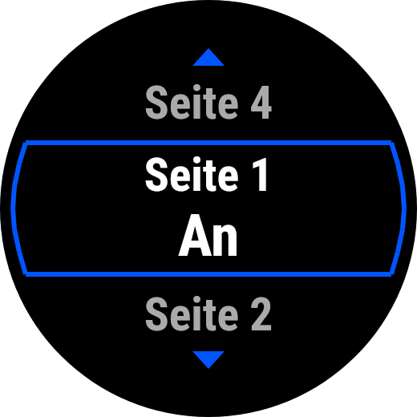


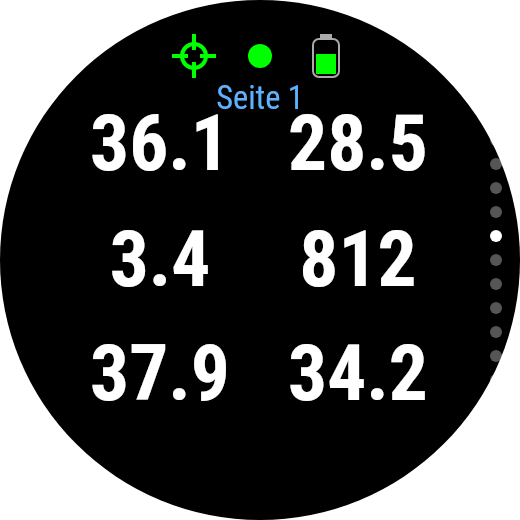
In den Layouts mit bis zu vier Zellen ist die erste Zelle grün, die zweite blau, die übrigen weiß.
Die Einstellungen öffnen Sie mit HOCH lang (fēnix) bzw. über den Eintrag „Einstellungen“ (vívoactive 4), auch während der Aufnahme. Das Menü öffnet auf „Pause“. Mit START öffnen Sie einen Eintrag, mit BACK gehen Sie eine Ebene zurück. Beim Verlassen des Hauptmenüs übernimmt die Uhr die Änderungen. Die Werte lassen sich auch in der Garmin-Connect-IQ-App auf dem Smartphone einstellen; die letzte Eingabe gilt.


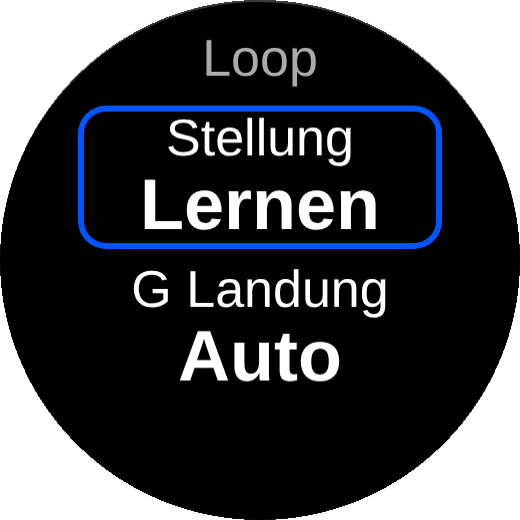
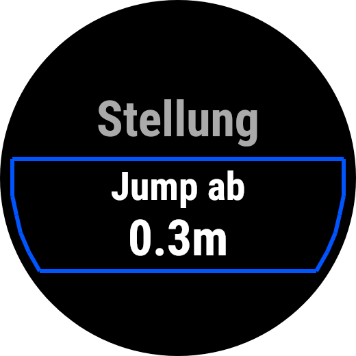

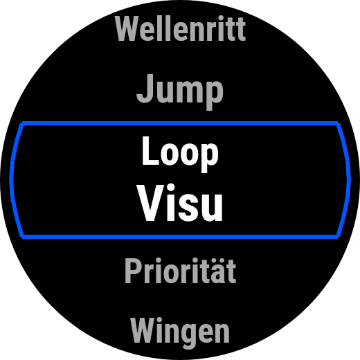

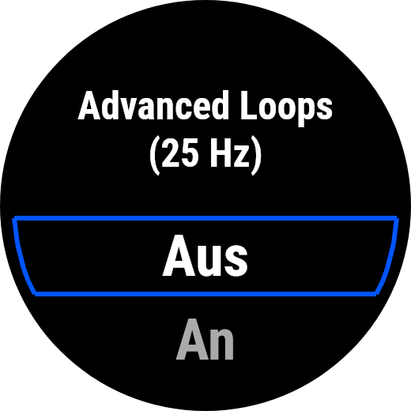
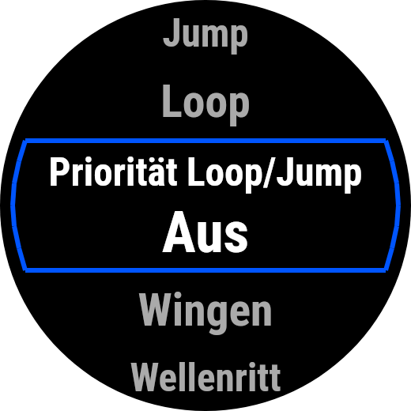
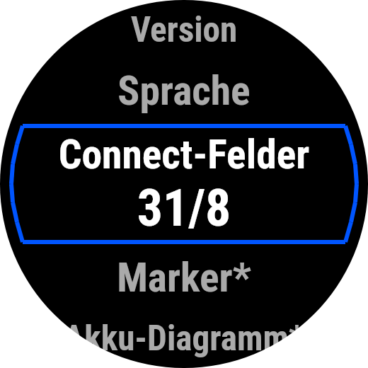
Zahlenwerte ändern Sie mit HOCH und RUNTER; darüber steht der nächstgrößere, darunter der nächstkleinere Wert. START übernimmt, BACK verwirft die Änderung. Stellungen stehen als Liste untereinander.
| Menü | Eintrag | Bedeutung und Werte |
|---|---|---|
| Hauptmenü | Pause | Manuell oder Automatic (Werkseinstellung: Automatic). |
| Hauptmenü | Felder | Nur Anzeige, keine Einstellung: „gewählt/Platz“, zum Beispiel 10/8. Erklärung in Abschnitt 8. |
| Modus | Wellenritt | Visu, Connect oder Aus (Werkseinstellung: Connect), siehe Abschnitt 9. |
| Modus | Jump › Stellung | Visu, Connect oder Aus (Werkseinstellung: Aus), siehe Abschnitt 9. Gilt ab der nächsten Session. |
| Modus | Jump › Jump ab | Ab welcher Höhe ein Sprung als Jump zählt: 0,3 bis 1,5 m in Schritten von 0,1 m (Werkseinstellung 0,3 m). Nur sichtbar, wenn Jump nicht auf Aus steht. Gilt ab der nächsten Session. |
| Modus | Loop › Stellung | Visu, Connect oder Aus (Werkseinstellung: Visu), siehe Abschnitt 9. |
| Modus | Loop › Advanced Loops | An oder Aus (Werkseinstellung: Aus). Nur sichtbar bei Loop Visu. Beim Öffnen steht „Advanced Loops (25 Hz)“ darüber. Gilt ab der nächsten Session. |
| Modus | Priorität Loop/Jump | An oder Aus (Werkseinstellung: Aus). Vor der Session einstellen, gilt ab der nächsten Session. Siehe Abschnitt 9. |
| Modus | Wingen | Zusätzliche Arm-Daten für die Wingen-Auswertung, An oder Aus (Werkseinstellung: Aus). Belegt zwei Connect-Felder. |
| Fahren | Fahrt ab | Geschwindigkeit, ab der die Fahrt beginnt und eine automatische Pause endet. 1 bis 30 km/h in Schritten von 0,5 (Werkseinstellung 5,5). |
| Fahren | Gleitschwelle | Geschwindigkeit, ab der die Fahrt als Gleiten zählt. 1 bis 80 km/h in Schritten von 0,5 (Werkseinstellung 11). |
| Fahren | Pause unter | Nur bei Automatic. Liegt die Geschwindigkeit länger als „Pause nach“ darunter, pausiert die Aufnahme. 0 bis 20 km/h in Schritten von 0,5 (Werkseinstellung 5). |
| Fahren | Pause nach | Nur bei Automatic. Dauer in Sekunden, 5 bis 300 in Schritten von 5 (Werkseinstellung 15). |
| Anzeige | Seite 1 bis 4 | Eigene Seiten einrichten, siehe Abschnitt 6. |
| System | Sprache | Auto, Deutsch oder English. |
| System | Connect-Felder | Auswahl der Werte, die als eigene Felder in die Aktivität geschrieben werden, siehe Abschnitt 8. |
| System | Marker* | An oder Aus (Werkseinstellung: An). Mit Aus setzt BACK keinen Marker, dafür steht ein Connect-Feld mehr zur Verfügung. Gilt ab der nächsten Session. |
| System | Akku-Diagramm* | An oder Aus (Werkseinstellung: An). Mit Aus wird der Akkuverlauf nicht in die Aktivität geschrieben; ein Connect-Feld mehr ist frei. Gilt ab der nächsten Session. |
| System | Debug-Protokoll | Schreibt zusätzliche Diagnosezeilen (Werkseinstellung: An). Siehe Abschnitt 13. |
| System | Version | Nur Anzeige der App-Version. |
Die Sternchen an Marker und Akku-Diagramm kennzeichnen Werte, die die Web-App nicht selbst aus den übrigen Trackdaten berechnen kann.
Garmin nennt sie Connect-IQ-Felder. Es sind zusätzliche Werte, die SurfsApp in die Aktivität schreibt, zum Beispiel Wellenritte, Halsen oder Jumps. Garmin selbst kennt diese Werte nicht, deshalb legt die App sie als eigene Felder in der Aktivitätsdatei ab, neben Geschwindigkeit, Strecke und Puls.
Die App berechnet ihre Kennzahlen unabhängig von dieser Auswahl. Unter System → Connect-Felder legen Sie fest, welche Werte zusätzlich als eigene Felder in der Aktivität stehen; abgewählte Werte werden nicht geschrieben. Die Auswahl lässt sich auch in der Garmin-Connect-IQ-App ändern. Die Reihenfolge der Tabellen unten ist zugleich die Rangfolge: Fehlt Platz, entfallen die zuletzt aufgeführten Felder zuerst.
Einige der 16 Felder belegt die App immer selbst, weitere belegen die Stellungen im Menü Modus. Was übrig bleibt, steht für Ihre Auswahl zur Verfügung. Das zeigt die Uhr unter Felder und unter System → Connect-Felder als zwei Zahlen:
10/8 heißt also: 10 Felder sind eingeschaltet, aber nur 8 haben Platz; die letzten zwei entfallen. Die Berechnungen auf der Uhr bleiben davon unberührt. Die Grenze von 32 Zeichen für Textfelder berücksichtigt die Anzeige nicht.
Immer belegt sind „Ausrichtung“ (bei Wellenritt Visu stattdessen „Drehung“) und „Aufnahme-Info“, dazu Marker und Akku-Diagramm, sofern eingeschaltet. Je nach Modus kommen hinzu:
| Stellung | Belegt zusätzlich |
|---|---|
| Loop Aus oder Connect, Jump Aus oder Connect, Wellenritt Connect oder Aus | nichts |
| Wellenritt Visu | nichts: „Drehung“ ersetzt „Ausrichtung“ |
| Loop Visu und/oder Jump Visu | 4 Felder (Kreisel Netto und drei Sprungdaten-Felder); beide teilen sich diese Felder |
| dazu Priorität Loop/Jump | 11 statt 4 Felder (Kreisel Netto und zehn Sprungdaten-Felder) |
| Wingen an (nur beim Wingen) | 2 Felder (Armneigung und Armunruhe) |
Beispiele für Windsurfen mit Marker und Akku-Diagramm (Werkseinstellung):
| Einstellung | Plätze frei |
|---|---|
| Loop Connect, Jump Connect | 12 (16 − 4 immer belegte) |
| Loop Visu oder Jump Visu | 8 (16 − 4 − 4) |
| Loop Visu oder Jump Visu mit Priorität | 1 (16 − 4 − 11) |
| wie Loop Visu, aber Marker und Akku-Diagramm aus | 10 |
| Rang | Bezeichnung auf der Uhr | Name in der Aktivität | Einheit |
|---|---|---|---|
| 1 | Halsen | Halsen | – |
| 2 | Vmax Zeit | Vmax Zeitpunkt | – |
| 3 | Wellenritte | Wellenritte | – |
| 4 | Bester Ritt | Bester Wellenritt | – |
| 5 | Durchgleitq. | Durchgleitquote | % |
| 6 | GPS-Ausreißer | GPS Ausreisser | s |
| Rang | Bezeichnung auf der Uhr | Name in der Aktivität | Einheit |
|---|---|---|---|
| 7 | Wellen-Diagramm | Wellenritt-Tempo | km/h |
| 8 | Wellen/Runde | Wellenritte Runde | – |
| 9 | Ritt Strecke | Ritt Strecke | m |
| 10 | Ritt Max | Ritt Max | km/h |
| 11 | Bester Ritt/Rd. | Bester Ritt Runde | km/h |
| 12 | Slide [m] | Slide [m] | m |
| 13 | Slide [s] | Slide [s] | s |
| 14 | Loops | Loops | – |
| 15 | Jumps | Jumps | – |
| 16 | Höchster Jump | Hoechster Jump | m |
| 17 | Beste 2 s | Beste 2s | km/h |
| 18 | Beste 10 s | Beste 10s | km/h |
| 19 | Beste 100 m | Beste 100m | km/h |
| 20 | Alpha 250 | Alpha 250 | km/h |
| 21 | Beste 250 m | Beste 250m | km/h |
| 22 | Beste 500 m | Beste 500m | km/h |
| 23 | Beste 1 NM | Beste 1NM | km/h |
| 24 | Wenden | Wenden | – |
| 25 | Gleiten % | Gleiten | % |
| 26 | Treiben % | Treiben | % |
| 27 | Dümpeln % | Duempeln | % |
| 28 | Treibzeit | Treibzeit | min |
| 29 | Dümpelzeit | Duempelzeit | min |
| 30 | Gleitzeit | Gleitzeit | min |
| 31 | Treibstrecke | Treibstrecke | km |
| 32 | Dümpelstrecke | Duempelstrecke | km |
| 33 | Gleitstrecke | Gleitstrecke | km |
Slide [m] und Slide [s] werden nur mit Wellenritt Visu angelegt. Loops, Jumps und Höchster Jump nur, wenn die jeweilige Erkennung eingeschaltet ist. Wellen-, Slide-, Loop- und Jump-Felder gibt es nur beim Windsurfen.
| Anzeige | Uhr | Garmin Connect | Web-App |
|---|---|---|---|
| Live-Seiten und Auswertung | Während bzw. nach der Aufnahme direkt auf der Uhr; die letzte Auswertung unter „Letzte Session“. | Die Uhransichten werden nicht übertragen. | Die Uhransichten werden nicht übertragen. |
| Connect-Felder, z. B. Halsen oder Jumps | Auswahl unter System → Connect-Felder. | Nur ausgewählte Felder mit Platz; die Darstellung bestimmt Garmin. | Einige Uhrwerte im Vergleich „Kontrolle Uhr ↔ Web“; viele Kennzahlen rechnet die Web-App selbst. |
| Wellenritte und Slides | Seiten Wellen, Wellenritte und (mit Visu) Rittdetails; Auswertung. | Ausgewählte Felder. | Rittkarten aus der Spur; mit Wellenritt Visu zusätzlich Brett-Kurs und Slides. |
| Loops und Jumps | Loop-Seite, Listen Loops und Jumps; Auswertung mit den Besten. | Felder Loops, Jumps, Höchster Jump, wenn ausgewählt. | Sprungdaten nur mit Loop bzw. Jump Visu; Darstellung soweit die Messdaten es erlauben. |
| Marker und Akkuverlauf | Marker setzen, Akkustand sehen. | Soweit Garmin die Felder darstellt. | Nur bei eingeschaltetem Schalter; Marker lassen sich auch in der Web-App setzen. |
Beim Windsurfen erkennt die App Wellenritte selbst. Sie müssen nichts auslösen. Die Seite Wellen zeigt den letzten Ritt, die Liste Wellenritte die letzten Ritte, die Auswertung die besten. Der Schalter Wellenritt im Menü Modus hat drei Stellungen:
| Stellung | Wirkung | Connect-Felder |
|---|---|---|
| Visu | Wie Connect, zusätzlich zeichnet die Uhr die Drehung des Arms auf. Daraus zeigen Uhr und Web-App Brett-Kurs und Slides für jeden Turn; auf der Uhr erscheint die Seite Rittdetails. | keine zusätzlichen („Drehung“ ersetzt „Ausrichtung“) |
| Connect | Die Uhr zählt Wellenritte und Turns und zeigt Bottom Turn und Cutback mit Tempo vorher und nachher, den besten Ritt und die Wellen je Runde. Slides gibt es nicht. | keine |
| Aus | Keine Wellenritte auf der Uhr: Die Seite Wellen bleibt leer, die Liste Wellenritte entfällt, und die Auswertung hat keine Seiten Wellen, Slides und Beste Ritte. Die Web-App ermittelt Ritte weiterhin aus der Spur. Gilt ab der nächsten Session. | keine |
Turn: ein Bottom Turn mit dem folgenden Cutback. Ein angefangenes Paar zählt nicht. Slide (nur Visu): Das Brett dreht im Cutback deutlich weiter als die Fahrtrichtung. Slide [s] und Slide [m] sind Dauer und Strecke aller Slides. Die Uhr misst den Arm, nicht das Brett: Greifen Sie im Ritt um, kann der Brett-Kurs in diesem Ritt abweichen.
Ein Jump ist ein Sprung ohne Loop. Die Uhr erkennt ihn an der Flugphase und schätzt Höhe und Flugzeit. Ein Sprung mit Loop zählt als Loop, nicht zusätzlich als Jump. Der Schalter Jump im Menü Modus:
| Stellung | Wirkung | Connect-Felder |
|---|---|---|
| Visu | Wie Connect, zusätzlich legt die Uhr zu jedem Jump Messdaten für die Web-App in die Aktivität (Auswertung in der Web-App in Vorbereitung). | 4 (gemeinsam mit Loop Visu), mit Priorität 11 |
| Connect | Die Uhr zählt Jumps und zeigt sie in der Liste Jumps und in der Auswertung; die Felder Jumps und Höchster Jump können in die Aktivität. | keine zusätzlichen |
| Aus | Keine Jump-Erkennung. | keine |
Jump ab legt fest, ab welcher Höhe ein Sprung zählt (0,3 bis 1,5 m). Kleine Hüpfer über Kabbelwasser bleiben so außen vor. Die angezeigte Höhe ist eine Schätzung der Uhr aus ihren Bewegungsdaten, keine Vermessung.
Die App erkennt Loops selbst, zählt sie und benennt die Art: Frontloop, Backloop oder Double Forward; ist die Art nicht sicher, steht „Loop“. Der Schalter Loop im Menü Modus:
| Stellung | Wirkung | Connect-Felder |
|---|---|---|
| Visu | Wie Connect, zusätzlich legt die Uhr zu jedem Loop Messdaten in die Aktivität: Lage im Raum und Drehung, für die Auswertung in der Web-App. | 4 (gemeinsam mit Jump Visu), mit Priorität 11 |
| Connect | Loops werden gezählt und benannt (Loop-Seite, Liste Loops, Auswertung). Keine Messdaten für die Web-App. | keine zusätzlichen |
| Aus | Keine Loop-Erkennung, kein Loop-Wert in der Aktivität. | keine |
Advanced Loops (25 Hz) gibt es nur bei Loop Visu. Die Uhr legt die Messdaten jedes Loops dann vollständig mit ihrer vollen Messrate ab. Das ist die Grundlage, um in der Web-App weitere Loop-Arten wie Pushloop und Stalled Forward zu unterscheiden (in Vorbereitung). Die Daten eines Loops werden dadurch umfangreicher und brauchen länger, bis sie in der Aktivität stehen.
Mit Loop oder Jump auf Visu schreibt die Uhr die Messdaten nach und nach in die Aktivität, in drei dafür reservierten Feldern. Bei vielen Sprüngen in kurzer Folge kann es deshalb dauern, bis alles geschrieben ist, und beim Speichern entsteht eine Wartezeit (Abschnitt 4).
Priorität Loop/Jump reserviert zehn statt drei Felder. Die Sprungdaten stehen dadurch etwa dreimal so schnell in der Aktivität, für alle Sprungarten, auch künftige. Dafür bleiben für die übrigen Connect-Felder nur noch wenige Plätze, mit Marker und Akku-Diagramm genau einer. Priorität muss vor der Session eingestellt sein und gilt für die ganze Aufnahme.
Beim Windsurfen vor dem Start Loop Visu, Jump Visu und Wellenritt Visu einstellen. So stehen Sprünge mit Lage im Raum und alle Turns mit Brett-Kurs und Slides für die Web-App bereit. Springen Sie viel, schalten Sie Priorität Loop/Jump ein und nehmen Sie in Kauf, dass dann kaum noch Connect-Felder Platz haben. Speichern Sie nicht direkt nach dem letzten Sprung, sondern fahren Sie noch ein Stück; sonst wartet die Uhr beim Speichern.
Beim Wingen schaltet „Wingen“ im Menü Modus zusätzliche Arm-Daten ein; dafür werden zwei Connect-Felder belegt. Ohne sie schätzt die Web-App Downwinds aus der Spur. Jumps, Loops und Wellenritte gibt es beim Wingen auf der Uhr nicht.
Mit BACK setzen Sie während der Aufnahme einen Marker, zum Beispiel nach einem besonderen Sprung, einer Welle oder einem Spot-Wechsel. Die Uhr bestätigt mit zwei kurzen Vibrationen. Zwei Marker müssen mindestens zwei Sekunden auseinander liegen. Die Marker werden mit der Aktivität gespeichert, sodass Sie die Stelle bei der Auswertung wiederfinden; auf der Hauptseite erscheint der Marker kurz mit seiner Nummer. Wer keine Marker braucht, schaltet Marker* unter System aus: Dann tut BACK während der Aufnahme nichts, und ein Connect-Feld mehr ist frei.
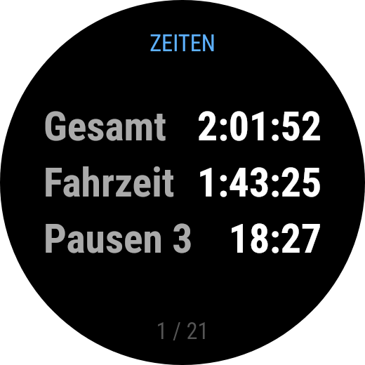
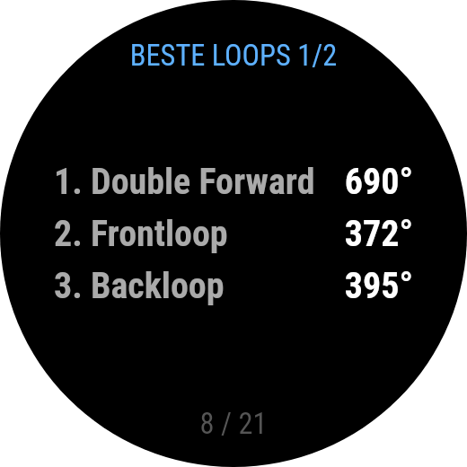
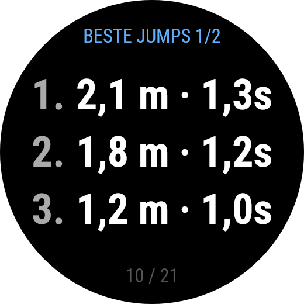
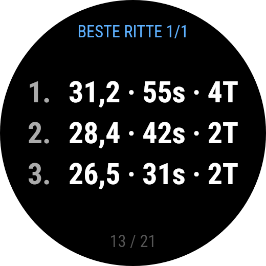
Nach dem Speichern zeigt die Uhr die Auswertung. HOCH und RUNTER blättern, unten steht die Seitenzahl, BACK schließt sie. Die letzte Auswertung erreichen Sie jederzeit über „Letzte Session“ auf der Startseite. Die Seiten in ihrer Reihenfolge:
Seiten ohne Inhalt entfallen, zum Beispiel Beste Jumps ohne Jumps oder die Wellen-Seiten bei Wellenritt Aus und beim Wingen. Die Aufnahme liegt als Aktivität in Garmin Connect. Für die Web-Auswertung laden Sie die FIT-Datei in die SurfsApp-Web-App.
Jede Zelle einer eigenen Seite kann eines dieser Datenfelder anzeigen:
Loops, Slides, Slide [m] und Slide [s] gibt es nur beim Windsurfen, Slides nur mit Wellenritt Visu. Unbekannte Werte erscheinen als „--“, nicht als 0.
SurfsApp läuft auf Garmin-Uhren mit Connect IQ. Die Bedienung hängt nur davon ab, ob die Uhr fünf Tasten hat oder eine Touch-Uhr mit zwei Tasten ist. Beides ist in Abschnitt 2 beschrieben.
Bedienung über die Tasten, der Touchscreen wird nicht ausgewertet.
Bedienung über Wischen und die zwei Tasten.
Die Darstellung passt sich der Bildschirmgröße der Uhr an. Die Bilder in dieser Anleitung zeigen eine runde Uhr mit 260 × 260 Bildpunkten.
Das Debug-Protokoll ist nur für die Fehlersuche gedacht. Ist es eingeschaltet, schreibt die Uhr während der Aufnahme Zeilen mit Zeitstempel in eine Textdatei, zum Beispiel Akkustand, Speicher und besondere Ereignisse. Garmin legt diese Datei nur an, wenn Sie die Datei vorher selbst erstellt haben.
Zeichnen Sie wie gewohnt auf. Danach schließen Sie die Uhr wieder an den Computer an und öffnen die Textdatei im Ordner LOGS. Dort stehen die Zeilen der letzten Aufnahme. Die Datei wächst mit jeder Aufnahme. Löschen Sie den Inhalt, wenn Sie ein frisches Protokoll wollen.
Stürzt die App ab, schreibt die Uhr außerdem automatisch die Datei CIQ_LOG.YML in denselben Ordner LOGS. Sie enthält die Fehlermeldung.
Schalten Sie das Debug-Protokoll nach der Fehlersuche wieder aus. Es belegt Speicher und verbraucht etwas Akku.
SurfsApp ist kostenlos.